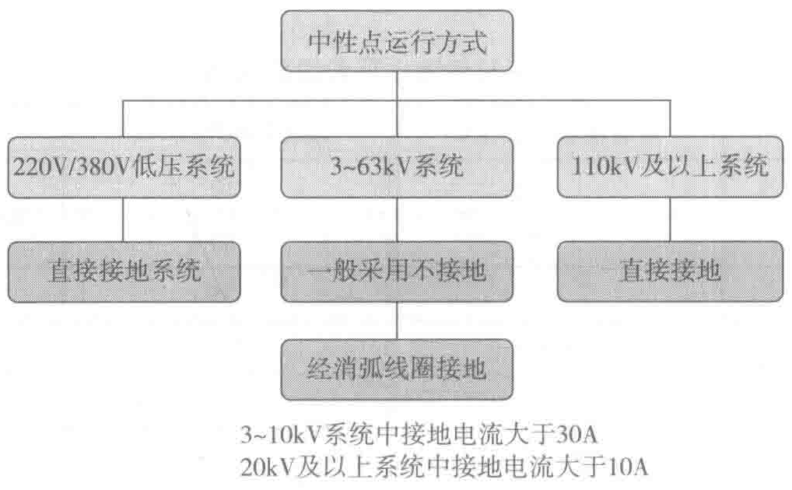
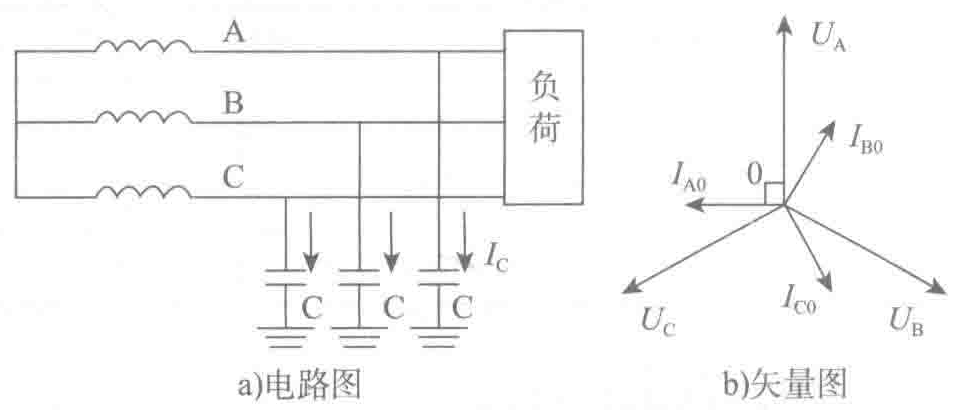

机、变压器接成星形的公共点，而电力系统中性点与大地间的电气连接方式，称之为电力系统中性点接地方式。电力系统中性点接地方式是保证系统安全、经济、有效运行的基础。
电力系统中性点接地方式分为三种：中性点不接地、中性点经阻抗（或消弧线圈）接地以及中性点直接接地。前两种被称为非有效接地系统或小电流接地系统，后一种被称为有效接地系统或大电流接地系统。确定电力系统中性点接地方式应从供电可靠性、内过电压、对通信线路的干扰、继电保护以及确保人身安全诸方面综合考虑。基本上，我国电力系统的中性点运行方式范围分布如图2-1所示。

下面分别讨论三种方式的特点及应用。
1. 中性点不接地的运行方式
中性点不接地的运行方式，即电力系统供电电源的中性点不与大地相连接。一般适用于3～63kV的电力系统，其电路图和相量图如图2-2所示。

正常运行时：UA+UB+UC=0；IA+IB+IC=0。三相电压对称，三相导线对地电容电流也是对称的，三相电容电流相量之和为零，这说明没有电容电流经过大地流动。当电力系统发生单相接地故障时（图例为A相接地），如图2-3所示。
- 相电压：A相接地时，对地电压为零。而B相对地电压U′B=UB−UA=UBA，与此同